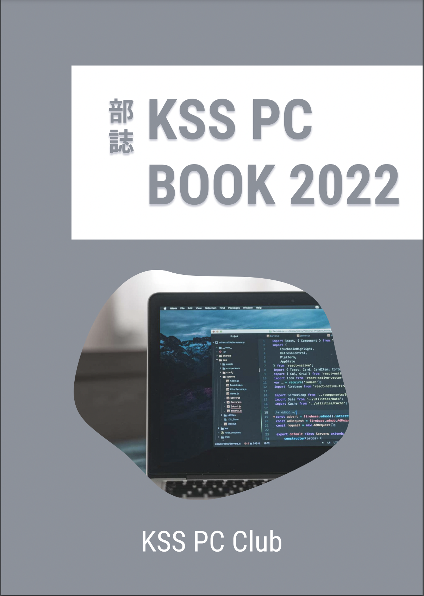

リンク
私たち、KSS PC Club の運営するアカウントやサイトへのリンク一覧です。 ぜひご覧ください！
公式 web サイト

2020 年度より開設した公式 web サイトでは、活動内容や受賞歴、記事の発信などを行なっています。GitHub というサイトでコードを公開しており、各部員によってデザインやコーティングが行われています。部が自主的に開設しているものであり、掲載内容は KSS PC Club に責任があります。
SNS アカウント
Github

公式 web サイトの項でも紹介した通り、部活内で作成したコードを共有、またインターネット上に公開するために運営しています。 一部の制作物のコードが閲覧できるのようになっているので、興味のある方はぜひご覧ください。
Youtube
現状コンテンツがありませんが、今後さまざまな動画を投稿していく予定です！
主な制作物
1. KSS Typing

プログラミングやコンピュータに関連する単語を集めたタイピングゲームです。日々単語の追加などを行なっています。 KSS PC Club では 1 年生がこのゲームでタイピングの練習を行なっています。
プレイはこちらから！
GitHub リポジトリはこちら
2. 文化祭待ち時間モニター

2019 年度/2022 年度の文化祭で、各模擬店の待ち時間を表示するために制作されたモニターです。各模擬店が、待ち時間を入力すると、即座にモニター側に反映されるようになっており、模擬店側のアプリにはチャット機能や売り上げ管理機能が搭載されています。
3. 部誌

2022 年度から、部員の記事発信能力を高めるため、部誌の制作を開始しました。今年度は現役、OB 含め 7 名が執筆を担当しました。内容は多岐に渡り、数学やプログラミング言語、キーボード自作などさまざまです。ぜひご一読ください!
閲覧はこちらから!